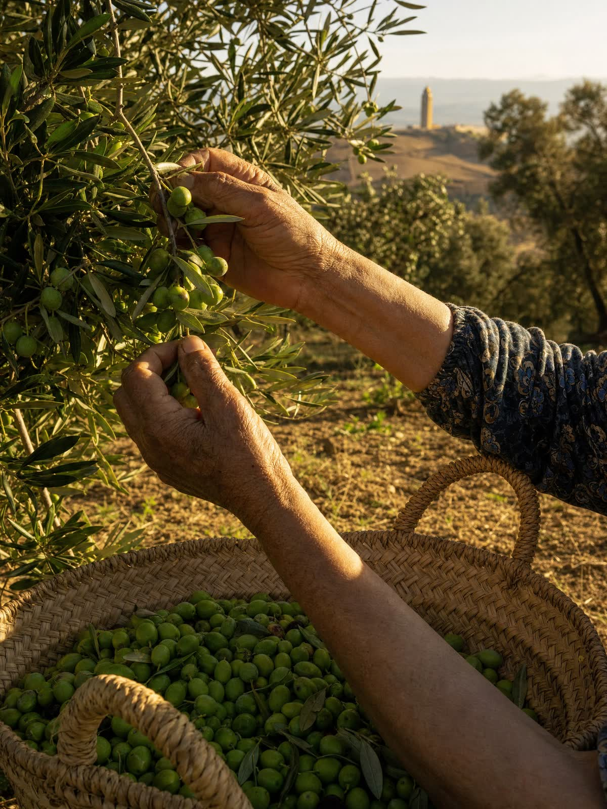
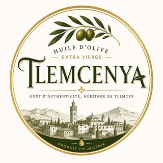
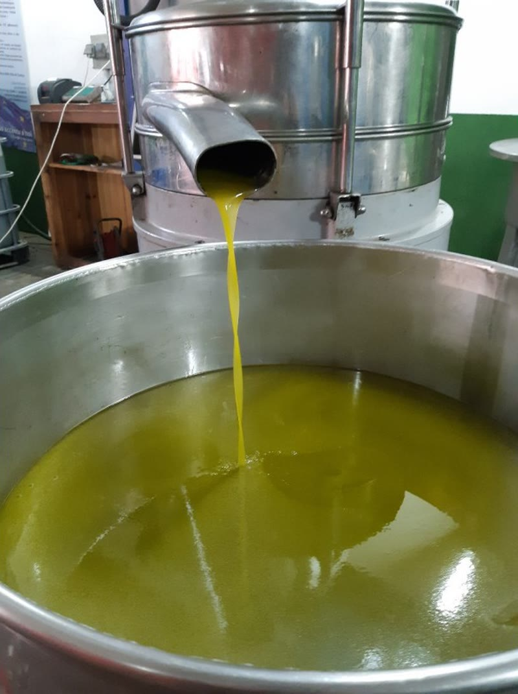

La Sigoise,pressée à froid
Nous pressons les olives des coteaux de Beni Snous dans les six heures qui suivent la cueillette, sans jamais dépasser 27 °C. Ce qui sort du décanteur part en cuve inox le jour même.
- Catégorie
- Vierge extra
- Acidité libre
- ≤ 0,8 %
- Variété
- Sigoise
- Récolte
- oct. – janv.
- Départ
- FOB Ghazaouet
Pourquoi la Sigoise
La Sigoise est l'olive de l'ouest algérien. Elle pousse sur les coteaux calcaires entre Tlemcen et Ghazaouet, où l'été est sec et la nuit fraîche. Cet écart de température concentre les polyphénols au lieu de les diluer.
Son rapport pulpe/noyau donne un rendement de 18 à 22 % en extraction à froid. En bouche : artichaut cru, amande verte, une amertume franche et un poivre qui reste en fin de gorge. C'est une huile qui tient la cuisson et qui ne s'efface pas dans une vinaigrette.
- Rendement en extraction à froid
- 18 – 22 %
- Altitude des parcelles
- 420 – 760 m
- Densité de plantation
- 180 arbres / ha
- Âge moyen des oliviers
- 45 ans

De l'arbre à la cuve
Six opérations, dans l'ordre. Chacune a une contrainte de temps ou de température, et c'est là que se décide la qualité du lot.
-
Cueillette
Peignes pneumatiques et filets. Les olives descendent en caisses ajourées de 22 kg, jamais en sacs : un sac écrase le fruit et fait monter l'acidité avant même l'arrivée au moulin.
≤ 6 h jusqu'au moulin
-
Réception et lavage
Pesée, effeuillage, lavage à l'eau froide. Chaque apport reçoit un numéro de lot qui suivra l'huile jusqu'au conteneur.
Lot ouvert
-
Broyage
Broyeur à marteaux inox, flux continu. La pâte est formée à l'abri de l'air autant que l'installation le permet.
Acier inoxydable
-
Malaxage
Quarante minutes sous azote, 26 °C au maximum. Plus chaud, on gagne du rendement et on perd les arômes : nous arbitrons pour les arômes.
26 °C max
-
Extraction
Décanteur centrifuge à deux phases. Pas d'eau ajoutée, donc pas de polyphénols lessivés et pas de margines à traiter.
Deux phases
-
Stockage
Cuves inox de 12 000 l inertées à l'azote, à 16 °C et à l'obscurité. Le conditionnement se fait à la commande, jamais à l'avance.
16 °C, sous azote

L'huilerie



Spécification
Les limites que nous garantissons pour la catégorie vierge extra, selon les méthodes du Conseil oléicole international. Les valeurs mesurées de chaque lot figurent sur le certificat d'analyse qui accompagne l'expédition.
- Catégorie
- Vierge extra
- Variété
- Sigoise
| Paramètre | Limite vierge extra | Méthode |
|---|---|---|
| Acidité libre (% acide oléique) | ≤ 0,80 | COI/T.20/Doc. nº 34 |
| Indice de peroxyde (meq O₂/kg) | ≤ 20,0 | COI/T.20/Doc. nº 35 |
| Extinction K232 | ≤ 2,50 | COI/T.20/Doc. nº 19 |
| Extinction K270 | ≤ 0,22 | COI/T.20/Doc. nº 19 |
| Delta-K | ≤ 0,01 | COI/T.20/Doc. nº 19 |
| Polyphénols totaux (mg/kg) | non plafonné | COI/T.20/Doc. nº 29 |
| Teneur en cires (mg/kg) | ≤ 150 | COI/T.20/Doc. nº 28 |
| Médiane du défaut (organoleptique) | = 0 | COI/T.20/Doc. nº 15 |
Conditionnement et logistique
Nous chargeons en vrac pour les embouteilleurs et en unités de vente pour les distributeurs. Les quantités ci-dessous correspondent à un conteneur 20 pieds.
| Format | Contenance | Unités / palette | Palettes / 20′ | Net / conteneur |
|---|---|---|---|---|
| Flexitank | 22 000 l | — | 1 | 22 000 l |
| IBC inox | 1 000 l | 1 | 20 | 20 000 l |
| Bouteille PET | 1 l | 720 | 20 | 14 400 l |
| Bidon fer-blanc | 5 l | 72 | 20 | 7 200 l |
| Verre ambré | 750 ml | 480 | 20 | 7 200 l |
| Verre ambré | 500 ml | 720 | 20 | 7 200 l |
- Port de départ
- Ghazaouet, 40 km — Oran en alternative
- Incoterms
- EXW, FOB, CFR, CIF
- Commande minimum
- 1 palette en verre, 1 conteneur en vrac
- Délai de chargement
- 10 jours ouvrés après confirmation
- Marque propre
- À partir de 3 000 unités
Contrôles et certifications
ISO 22000:2018
Management de la sécurité des denrées alimentaires, audité annuellement sur le site de Tlemcen.
HACCP
Plan de maîtrise sanitaire couvrant la réception, le malaxage, l'extraction et le conditionnement.
Conseil oléicole international
Méthodes d'analyse et classification selon le référentiel COI en vigueur.
Agriculture biologique (UE 2018/848)
Conversion en cours sur deux parcelles de Beni Snous, certification attendue pour la campagne suivante.
Demander une cotation
Dites-nous le format et le volume. Nous répondons sous 48 heures ouvrées avec un prix, un calendrier de chargement et un échantillon sur demande.
Les champs marqués d'un astérisque sont obligatoires.